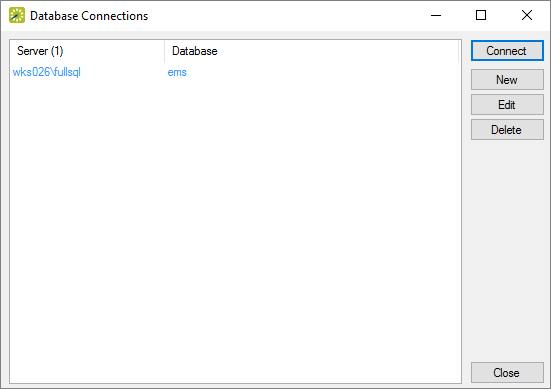
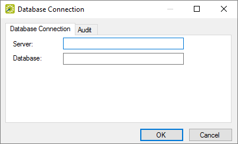
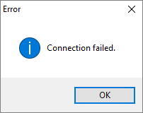

EMS CLOUD SERVICES CUSTOMERS
EMS Cloud Services Customers using the EMS Desktop Client Web Deployment will not change database connections from within the EMS Desktop Client. Please refer herehere for instructions on switching database connections.
If
This topic provides information on how to:
On the EMS Menu, select File > Change Database to bring up the Database Connections window.

Any database connection listed in blue is a system record inherited from the EMS Desktop Client Web Deployment that can not be deleted.
To connect to a database that is not the system database select it from the list of Database Connections then press the 'Connect' button. This will close and reopen the EMS Desktop Client connected to the selected database.
The user will need to log in again after changing databases.
To create a New connection select 'New' in the Database Connections window (shown above) to bring up the Database Connection window.
Type in the SQL server and EMS database name then select 'OK' to save the connection. You can delete connections later when you no longer need them.

For EMS to save this connection it will first check to see if it is a valid connection. If the connection is invalid, it will not be created you will see this error message:
